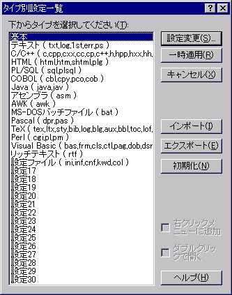

タイプ別設定一覧
タイプ別設定一覧のダイアログが表示されます。
リストからファイルタイプを選択し、
[設定変更]ボタン
このボタンを押すと、選択したタイプの設定が変更できます（該当するタイプのタイプ別設定ダイアログが表示される）。
[一時適用]ボタン
このボタンを押すと、現在開いているファイルのタイプを、選択したタイプに一時的に変更します（設定は保存されません）。
または、リストのタイプをダブルクリックしても同様の操作になります。

■マクロ構文
・構文: TypeList( );
・記録: ×